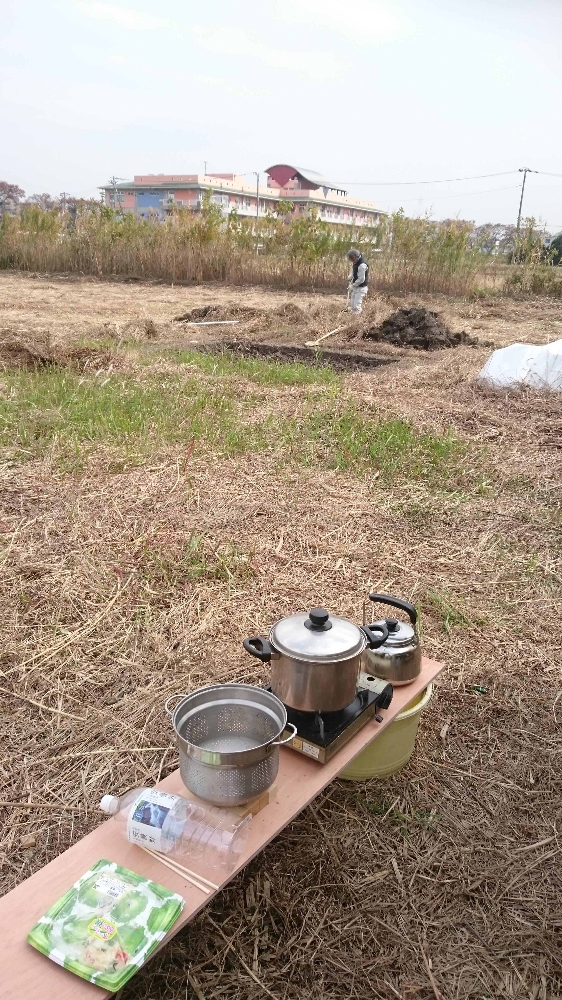

ピックアップ
6月に入り、約半年ぶりに直売所がようやくスタートできました。
こんな辺鄙な直売所でも、毎回新しい出逢いがあったりして、棚に野菜が並ぶと、やっぱり空気が変わります！
キャベツ、大根、玉ねぎ、じゃがいも etc... ひとつひとつはいつもの野菜でも、久しぶりに並ぶ姿を見ると「また始まったなあ」と感じます。
今月のピックアップ写真
半年ぶりに直売所へ野菜が並んだ様子。

おさんぽ便り
半年もお休みだったのは、季節に沿った露地栽培では、どうしたって作物が育たない時期があるからです。一年中、いろいろな野菜が買えるスーパーや、生産者さんの努力って本当にすごいんです。
現代はハウス栽培や輸入のおかげで、いつでも買えるお野菜が流通しているわけですが、さて、そんな時代はいつまで続くでしょうかね？
直売所では、季節の流れに合わせて、無理なく並べられるものを届けていきたいと思います。
1 / 3
季節のお野菜
6月〜7月の気になる野菜は、ズッキーニ。
おさんぽマルシェでは、スーパーでは売られていないズッキーニや、固定種の種から育てた珍しい品種も並びます。
ジジババ・人情・裏話
畑作業をしながら、昭和の時代を走ってきた先輩方から、最近はこんな話をよく聞きます。
「同級生が段々亡くなって、寂しいなあ」
胸にくる話だすなあ。こればっかりは避けられないことですけどさー、直売所の野菜を安く提供できるのも、こうしたレジェンド達の善意に支えられているからなんです。
畑を守ること。野菜を作ること。それを誰かに分けること。どれも当たり前のように見えて、長く続けてきた人たちの力があってこそです。
直売所の棚には、野菜だけでなく、そういう時間も一緒に並んでいるのかもしれませんだな。
お知らせ&お願い
毎週日曜日、朝7時ごろから直売所を開いています。
雨天の場合は中止です。今月もよろしくお願いいたします。
よかったら、Google Map に口コミを書いてもらえると助かるだよ。わかりづらい直売所に案内が届きやすいんだって！
めんどくせーから、気が向いたらで大丈夫です。
Google Map に口コミを書く
2 / 3
開墾からはじまる野食育
第1回「すべてはヤカン1つから始まった」
荒れ地から直売所へ、紡ぐ生きた知恵の記憶。
今でこそ直売所なんかやらせてもらっていますが、オラのところは、最初はただの葦（ヨシ）がボーボーの荒れ地でした。開墾からはじめて、気づけば10年があっという間に経ちました。
野食育の記録写真
最初に持ち込んだ、カセットコンロとヤカン。

お茶を沸かして一息つきながら、「本当にここが畑になるんか？」と途方に暮れていた日の写真だ。
オラもやってみて思うようになったが、食べ物が育つ場所は最初から畑だったわけではありません。ここから野生を少しずつ分けてもらう闘いが始まりました。
この連載では、教科書通りのきれいな食育ではなく、自然のまま、人間の暮らしのまま、泥臭くたくましく生きる「現場（野）」の知恵を届けていきます。
お爺さんの経験、ネ〜さんの生活力、オラの実験。みんな違って、みんなたくましい。野菜の向こう側にあるドラマも、少しずつお届けしていきたいなと思ってます。
3 / 3